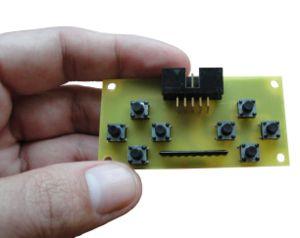
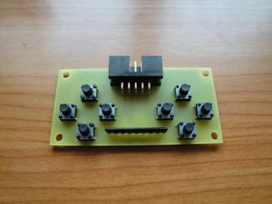
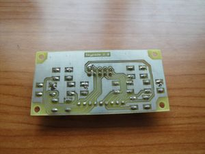
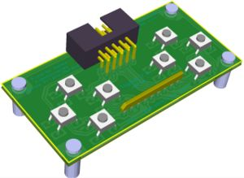
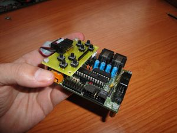
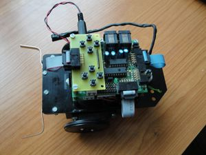
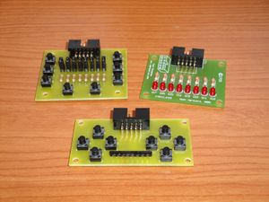

Contenido
[ocultar]Introducción
La skypads 2.0 es un periférico para la Tarjeta Skypic que incorpora 8 pulsadores dispuestos en dos grupos de 4, cada uno con forma de cruz. Además usarse como una tarjeta de propósito general para hacer pruebas y depurar (similar a la skypads 1.0), puede usarse para controlar robots con los botones como si fuese un pequeño joystick: adelante, atrás, izquierda y derecha. Para estas aplicaciones, es más intuitivo la disposición de los botones en cruz.
La skypads 2.0 se conecta a la Skypic a través de cualquiera de los puertos de expansión: A, B ó C. Su longitud es igual a la anchura de la Skypic, lo que permite colocarla fácilmente encima mediante dos separadores.
Es hardware libre2, diseñada con la herramienta Kicad.

Fotos
| Ver album de fotos de las Skypads 1.0 y 2.0 |

Prototipo 1
|  Prototipo 1 de la skypads 2.0. Cara superior |
 Prototipo 1 de la skypads 2.0. Cara inferior |
|  Modelo 3D de la Skypads 2.0 |
 Prototipo 1 de la Skypads 2.0 atornillada a una Skypic |
|  Skypads 2.0, controlando un Skybot |
 Las tarjetas skypads 1.0, 2.0 y Freeleds |


Descarga
Versión 2.0
| skypads-v2.0.zip | Ficheros fuentes para Kicad: Esquemas, librerias y PCB |
| skypads-2.0-sch.svg | Esquema en SVG |
| skypads-2.0-sch.pdf | Esquema en PDF |
| skypad-2.0-PCB-bottom.pdf | PCB. Cara inferior. PDF |
| skypad-2.0-PCB-serigrafia-top.pdf | Serigrafías cara superior. PDF |

Software de pruebas
Para probar la tarjeta skypads 2.0 se utiliza la tarjeta freeleds conectada al puerto B de la Skypic. La tarjeta skypads se conecta a los puertos A ó C. El estado de los pulsadores se muestra en los leds de la freeleds.
| skypads-software-test.zip | Fuentes de los programas de prueba. Compilados con el SDCC 2.8.0 |
| skypad-test.hex | Prueba 1. Conexión de la skypad al puerto C de la skypic. Mostrar el estado de los pulsadores en la tarjeta freeleds |
| skypad-test2.hex | Prueba 2. Conexión de la skypad al puerto A de la skypic. Mostrar el estado de los pulsadores en la tarjeta freeleds |
Repositorio
- Repositorio SVN: http://svn.iearobotics.com/skypads/
Para obtener la última versión teclear:
svn co http://svn.iearobotics.com/skypads/v2.0/
Historia
- 23/Ene/2010: Skypads 2.0 liberada! (Blog)
- 19/Ene/2010: Fabricado primer prototipo en la ETSI Telecomunicación. UPM. 4 unidades. Pruebas ok!
- 28/Dic/2009: Versión definitiva: reducido el tamaño. Publicada en el wiki. Utiliza la libreria Monolito 1.1
- 13/Dic/2009: Versión preliminar
Autores
Licencia
| |
| Este proyecto tiene una licencia libre. Se permite expresamente su copia, modificación, distribuición y fabricación siempre que se reconozca a los autores y se comparta el proyecto bajo la misma licencia.
Descarga de Responsabilidad. Los autores no se hacen responsables en ningún caso de los posibles daños o pérdidas de garantía que pueda ocasionar el uso, debido o indebido de la información contenida en este proyecto. |
Enlaces
- Skypads 1.0
- Skypic
- Monolito: Biblioteca de componentes para Kicad
- Tarjeta freeleds
Noticias
- 22/Ene/2010: Publicado fichero .zip con las fuentes del esquema y PCB
- 28/Dic/2009: Publicado esquema y PCB
- 27/Dic/2009: Comenzada esta página